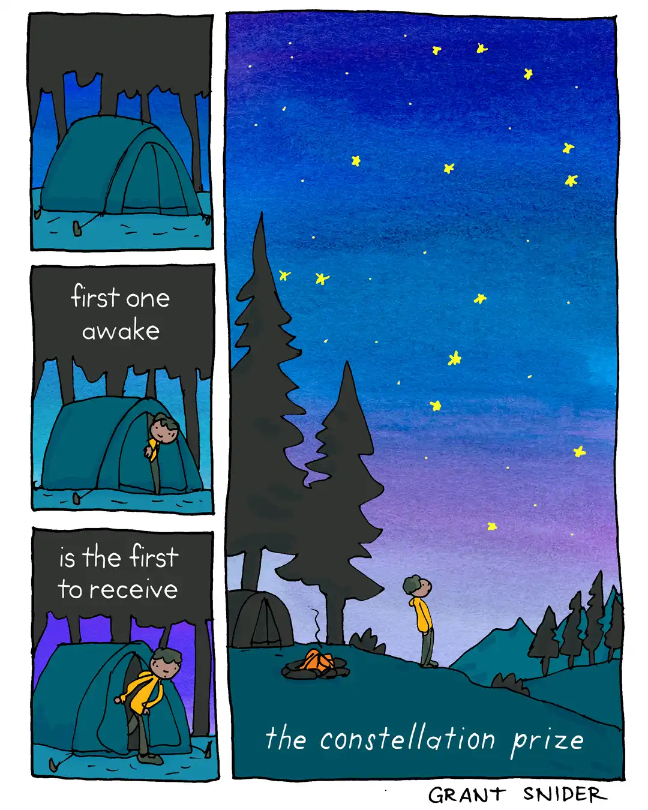

Happy Wednesday! Thank you for supporting the Daily Bulletin project.
- Suggest improvements to the Daily Bulletin project.
Wellbeing Inspirations
Want to contribute to a future Daily Bulletin? Share your inspirations to give everyone some morning wellbeing energy!
Cartoon of the Day

Created by Grant Snider.
Delicious Dinings
| Day | Meal | Options |
|---|---|---|
| Wed | Breakfast | Hot Breakfast |
| Lunch | Sticky Turkey Mince | |
| Grilled Aubergine & Roast Tempeh on Ratatouille 🌱 | ||
| Dinner | Sweet Potato Dopiaza 🌱 | |
| Thu | Breakfast | Continental Counter |
| Lunch | Chilli non Carne 🌱 | |
| Baked Potato 🌱 | ||
| Dinner | Moroccan Lamb Burger | |
| Grilled Halloumi 🌱 |
The catering team would like to remind everyone to wash their hands before coming to the dining hall, and to refrain from eating in the servery area. Thank you!
Retrieved from Shared Weekly Menu. For reference only; accuracy not guaranteed.
Important Events
| Day | Time | Event | Location |
|---|---|---|---|
| Wed | 17:00–19:00 | Wellbeing Drop-in | Health Centre |
| 18:00–19:00 | Movember. Strong Enough to Talk. | Great Hall |
Retrieved from What's On This Week.
Today in History
- 1491 – Reconquista: The signing of the Treaty of Granada effectively concluded the Granada War between Castile-Aragon and the Emirate of Granada.
- 1678 – Trunajaya rebellion: Mataram and Dutch troops successfully assaulted the rebel stronghold of Kediri in eastern Java.
- 1901 – Gustav Mahler's Symphony No. 4 premiered in Munich.
- 1936 – Nazi Germany and the Empire of Japan signed the Anti-Comintern Pact, agreeing that, if the Soviet Union attacked one of them, they would consult each other on measures to "safeguard their common interests".
- 1951 – The left-wing Japanese novelist Wataru Kaji disappeared, leading to a government inquiry in which CIA involvement was investigated.
Retrieved from Wikipedia.
Today in News
- Cheers and applause as Jensen Huang returns to Nvidia office
- First Lady Melania Trump welcomes this year's White House Christmas tree
- King Charles and Elton John pay tribute to Australian music legend Molly Meldrum
- Russian governor detained in rare criminal case against regional leader
- Gisèle Pelicot 'humiliated' after nude photos sent to media to promote book
- 'I want to destroy capitalism, not France': On the streets with the French ultra left
Retrieved from BBC News.